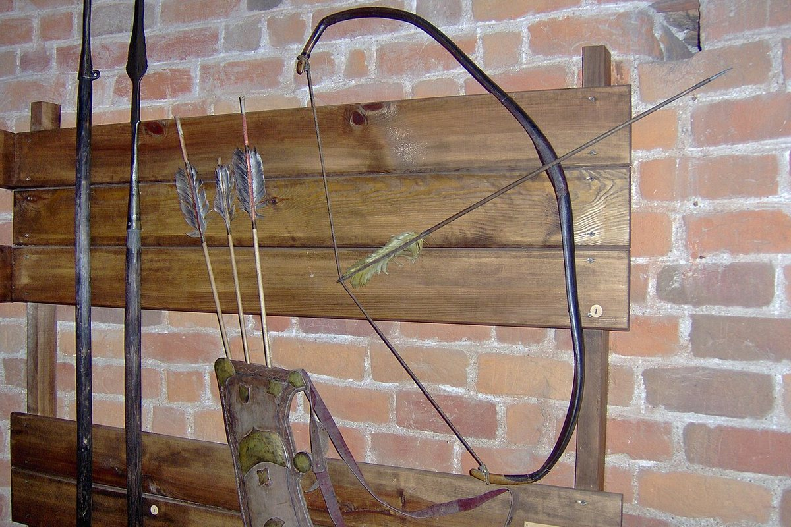

Адзіная захаваная валынская вежа на заходніх землях, пабудаваная ў XIII–XIV стагоддзях. Вышыня — 29,4 метра.
Камянецкая вежа — помнік абарончага дойлідства другой паловы XIII стагоддзя. Яна пабудавана на высокім узгорку левага берага ракі Лясной.
Гэта адзіная захаваная валынская вежа, узведзеная на заходніх землях у XIII–XIV стагоддзях. Вежа стаяла ўнутры кальцавога вала і панавала над драўлянымі ўмацаваннямі.
Вышыня пяціяруснай вежы — 29,4 метра, таўшчыня сцен — 2,5 метра, знешні дыяметр — 13,6 метра. Яна стаіць на магутным каменным фундаменце.
Сёння гэта музей і адна з галоўных славутасцей Камянца. З вежы адкрываецца від на горад і ваколіцы.

Афіцыйныя крыніцы
Матэрыял мае адукацыйны характар. Перад паездкай праверце рэжым працы і даступнасць аб’екта на афіцыйным сайце.